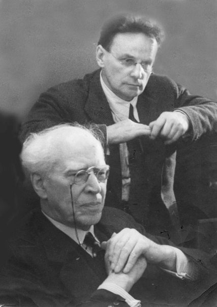

Welcome
Even fifteen minutes a day, as long as you don't skip days.
Source: Demidov Acting Certificate Course, Winter Homework
01
"Read the theme you just "picked". Lets' say, you picked "mosquito bites" – immediately, without any thinking, yield to spontaneous sensations, movements, thought – to everything that comes to you as a reaction to the words you read."
"Don't rush to move to the next theme, until you've exhausted the previous theme. Rest for a few minutes, then take another theme. No need to exercise many themes in one session, so that not to get accustomed to approximating the truth."
Three precepts
Direct quotes from Demidov Scales and the Scale Exercises Examples sheet
02
03
BA-C: Nikolai Demidov: Becoming an Actor-Creator (Routledge)
Heightened technique
Further homework
Source: Demidov Acting Certificate Course, Winter Homework